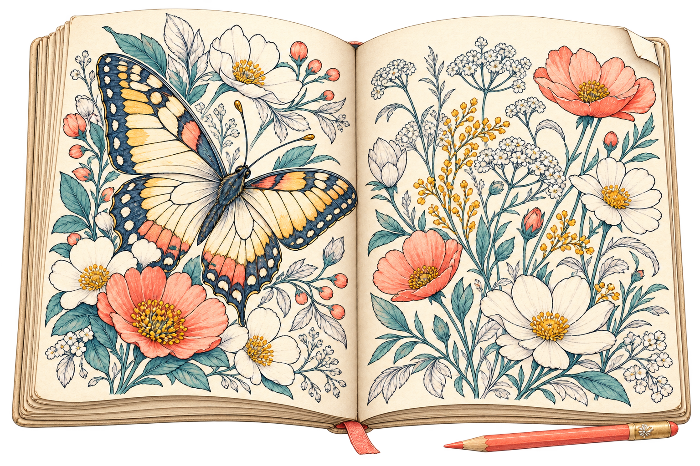
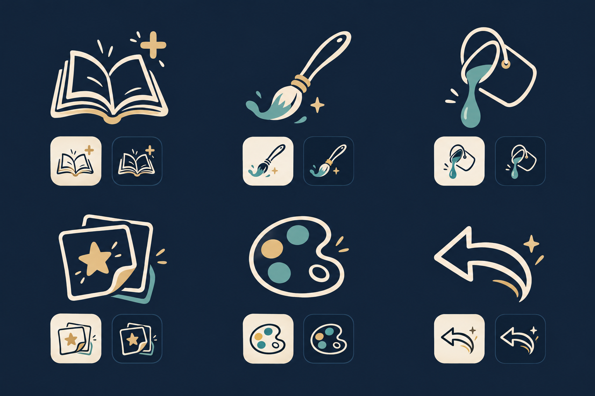
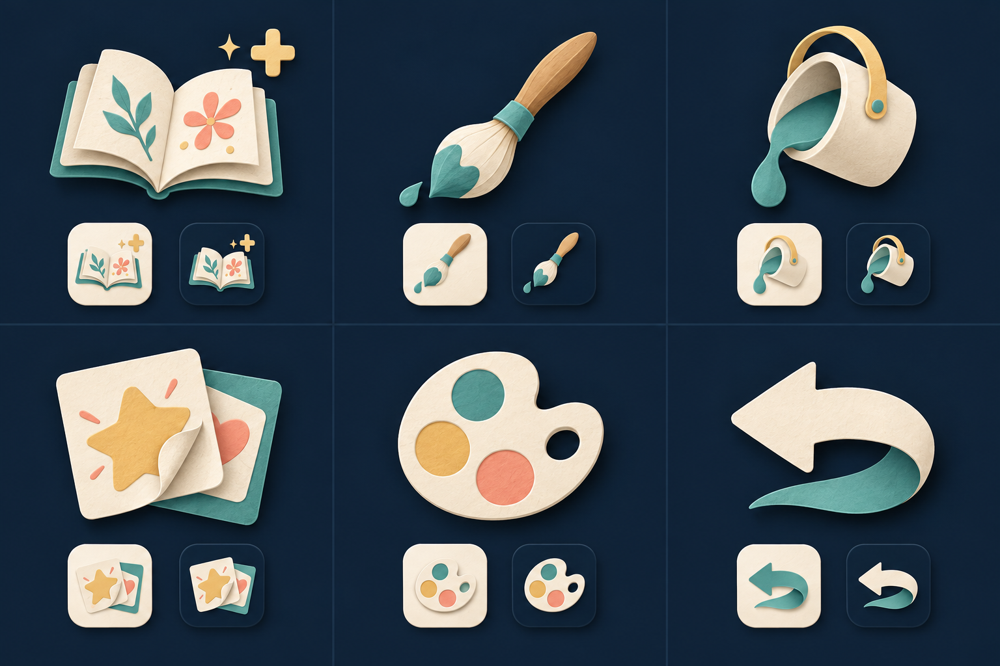
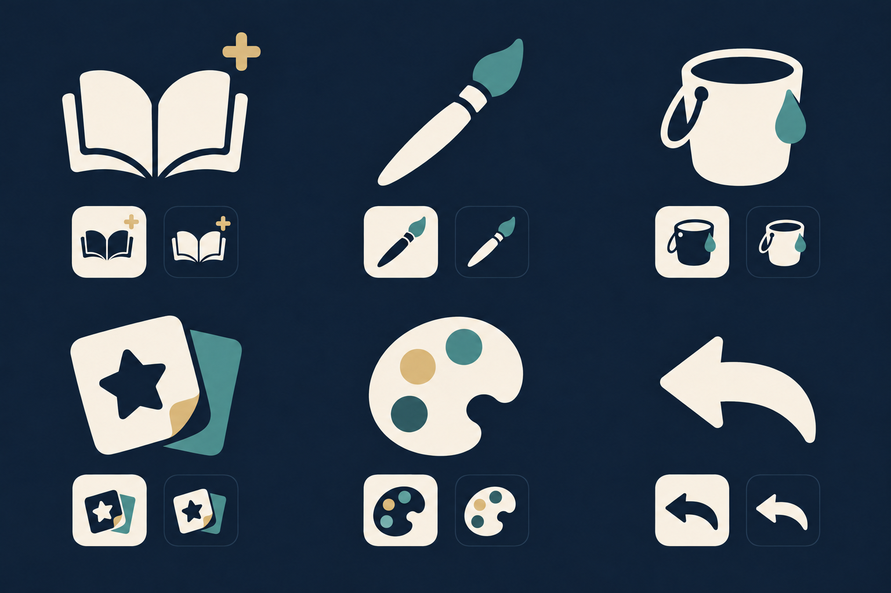
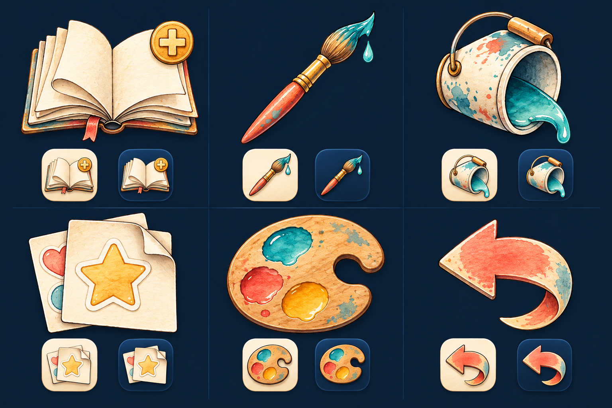
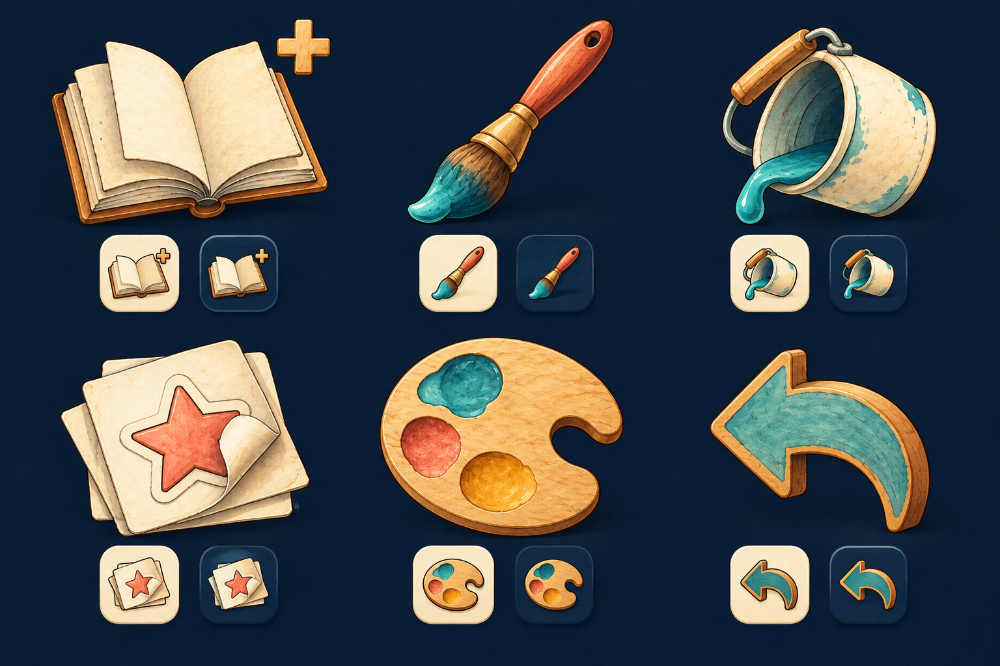
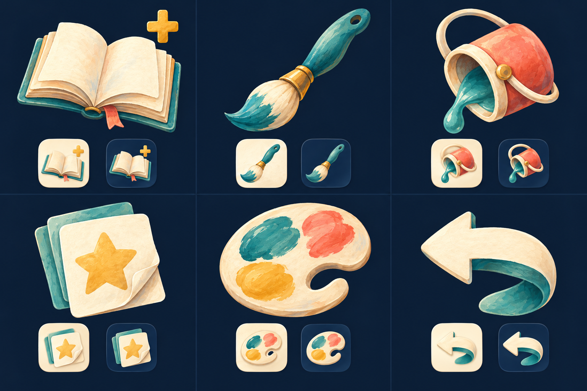
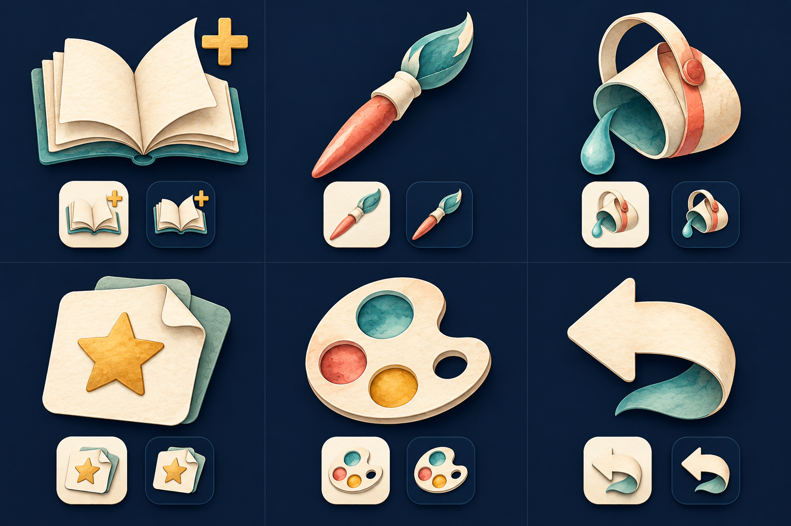

Studioodle / visual design reference
Every current interface icon, in one place.
135 uses and states across 15 areas · 60 Lucide glyphs plus custom SVG, cursor and painted artwork · 29 October 2026
Each sample shows light and dark ink on fixed review surfaces. Repeated icons stay in their respective areas. These are the current drawings, not redesigns; sample tiles are for comparison, not proposed button styling.
01 · Main drawing ribbon
The ten controls used while drawing.
Pan / move page
EditorPreview.tsxZoom
EditorPreview.tsxSelect sticker
EditorPreview.tsxErase
EditorPreview.tsxBrush
EditorPreview.tsxFill
EditorPreview.tsxStickers
EditorPreview.tsxColor palette
EditorPreview.tsxUndo
EditorPreview.tsxPalette + current ink dot
EditorPreview.tsx02 · Sticker selection drawer
Transformation and arrangement controls. Flip glyphs follow the current app mapping.
Shrink
StickerSelectionToolbar.tsxGrow
StickerSelectionToolbar.tsxRotate left
StickerSelectionToolbar.tsxRotate right
StickerSelectionToolbar.tsxFlip horizontally
StickerSelectionToolbar.tsxFlip vertically
StickerSelectionToolbar.tsxMove backward
LayerOrderIcon.tsxMove forward
LayerOrderIcon.tsxFocus / refit
StickerSelectionToolbar.tsxDuplicate
StickerSelectionToolbar.tsxDelete sticker
StickerSelectionToolbar.tsxFinish selection / focus
StickerSelectionToolbar.tsx03 · Home, saved pictures and app entry
Library actions and native-window controls; artwork entry points are shown separately below.
Previous picture
SelectionScreen.tsxNext picture
SelectionScreen.tsxSettings
SelectionScreen.tsxExit
SelectionScreen.tsxEnter fullscreen
SelectionScreen.tsxLeave fullscreen
SelectionScreen.tsxDelete picture
SelectionScreen.tsxExport picture
SelectionScreen.tsxUndo delete
SelectionScreen.tsxRetry preview
SelectionScreen.tsxPrint picture
SelectionScreen.tsxAdd to coloring pages
ColoringPageActionIcon.tsxAlready added
ColoringPageActionIcon.tsxBack to Studioodle
App.tsxRetry startup / saving
App.tsx04 · Shared overlay controls
Repeated meanings collected together; these also appear in many area-specific groups.
Close / dismiss / cancel
DialogHeader.tsxBack
DialogHeader.tsxNext / continue
BlankPageSetup.tsxApply / done / selected
CustomColorPicker.tsxPrevious page
StickerBrowser.tsxNext page
StickerBrowser.tsx05 · Brush options
Exact current tip marks, plus size controls.
Round tip
BrushPicker.tsxRising diagonal
BrushPicker.tsxFalling diagonal
BrushPicker.tsxScattered-circle tip
BrushPicker.tsxSmaller
BrushPicker.tsxLarger
BrushPicker.tsxUse brush
BrushPicker.tsx06 · Sticker subjects
Category icons only. No sticker artwork is included.
Shapes
stickerCatalog.tsCharacters
stickerCatalog.tsAnimals
stickerCatalog.tsPlants
stickerCatalog.tsSky
stickerCatalog.tsLandscapes
stickerCatalog.tsBuildings
stickerCatalog.tsObjects
stickerCatalog.tsVehicles
stickerCatalog.tsFood
stickerCatalog.ts07 · Sticker detail and ink
All / Easy / Medium / Detailed and the separate ink-color action.
All stickers
StickerBrowser.tsxEasy detail
StickerBrowser.tsxMedium detail
StickerBrowser.tsxDetailed
StickerBrowser.tsxChoose sticker ink
EditorPreview.tsx08 · Coloring-page categories and detail
Includes the custom Things and Learning drawings, plus current terrain glyphs.
All subjects
ColoringPagePicker.tsxCharacters
ColoringPagePicker.tsxAnimals
ColoringPagePicker.tsxPlaces and Nature
ColoringPagePicker.tsxThings: vehicles and objects
ColoringPagePicker.tsxLetters and Numbers
ColoringPagePicker.tsxSimple detail
ColoringPagePicker.tsxMedium detail
ColoringPagePicker.tsxHigh detail
ColoringPagePicker.tsx09 · Coloring-page browsing
View, favorites and page-library actions.
Grid overview
ColoringPagePicker.tsxSingle page
ColoringPagePicker.tsxFavorites / favorite off
ColoringPagePicker.tsxFavorite on
ColoringPagePicker.tsxPrevious coloring page
ColoringPagePicker.tsxNext coloring page
ColoringPagePicker.tsxAdd coloring pages
ColoringPagePicker.tsxShare coloring page
ColoringPagePicker.tsxDelete custom page
ColoringPagePicker.tsx10 · Page sharing and picture export
Same visual can serve different tasks; labels here record the current action.
Preview pasted code
ColoringPageTransfer.tsxCopy page code
ColoringPageTransfer.tsxDownload page file
ColoringPageTransfer.tsxOpen page file
ColoringPageTransfer.tsxConfirm page import
ColoringPageTransfer.tsxPNG image
ExportPictureDialog.tsxSVG artwork
ExportPictureDialog.tsxPDF document
ExportPictureDialog.tsxDownload export
ExportPictureDialog.tsx11 · Paper setup
The actual folded-paper artwork and orientation glyphs.
A4
PaperSetup.tsxA5
PaperSetup.tsx4 × 6 inches
PaperSetup.tsx6 × 6 inches
PaperSetup.tsxTall orientation
PaperSetup.tsxWide orientation
PaperSetup.tsxPaper-size step
BlankPageSetup.tsxPaper-color step
BlankPageSetup.tsxContinue to color
BlankPageSetup.tsx12 · Color palettes and custom-color editing
Five palette families; Custom has both empty and populated states.
Everyday
PalettePicker.tsxPastel
PalettePicker.tsxVivid
PalettePicker.tsxMoody
PalettePicker.tsxCustom — empty
PalettePicker.tsxCustom — populated
PalettePicker.tsxEdit custom palette
PalettePicker.tsxFinish palette editing
PalettePicker.tsxApply custom color
CustomColorPicker.tsxSelected swatch
PaperColorPicker.tsx13 · Settings and feedback
Theme controls, preferences, loading and failure indicators.
Follow system theme
SelectionSettings.tsxLight theme
SelectionSettings.tsxDark theme
SelectionSettings.tsxShortcut guide
SelectionSettings.tsxAdvanced settings
SelectionSettings.tsxOpen preferences
SelectionSettings.tsxLoading / busy
SavedPreview.tsxPreview unavailable
SavedPreview.tsxConfirm deletion
DeletePictureDialog.tsx14 · Pointer artwork
Current 40px cursor graphics, including drag and menu states. Paint accents use Classic blue for this reference.
%22%3E%3Cg%20stroke%3D%22%2326333b%22%20stroke-width%3D%221.4%22%20stroke-linecap%3D%22round%22%20stroke-linejoin%3D%22round%22%3E%3Cpath%20d%3D%22M12%2023%2028%204Q31%201%2034%204T33%2010L18%2028Z%22%20fill%3D%22%23c89b78%22%20%2F%3E%3Cpath%20d%3D%22m12%2023%206%205%204-5-6-5Z%22%20fill%3D%22%239dadae%22%20%2F%3E%3C%2Fg%3E%3Cpath%20d%3D%22M12%2023C4%2024%208%2031%204%2035C14%2035%2020%2031%2018%2028Z%22%20fill%3D%22%2326333b%22%20%2F%3E%3Cpath%20d%3D%22M12.2%2024.2C6%2025%209%2031%204%2035C13%2033.8%2018.9%2030.8%2017.5%2028.5Z%22%20fill%3D%22%234892dc%22%20%2F%3E%3C%2Fg%3E%3C%2Fsvg%3E%0D%0A)
brush
toolCursors.ts%22%3E%3Cg%20stroke%3D%22%2326333b%22%20stroke-width%3D%221.4%22%20stroke-linecap%3D%22round%22%20stroke-linejoin%3D%22round%22%3E%3Cg%20transform%3D%22rotate(-35%2021%2020)%22%3E%3Cpath%20d%3D%22M11%2013C6-1%2036-1%2031%2013%22%20fill%3D%22none%22%20%2F%3E%3Cpath%20d%3D%22M10%2012%2012%2029C17%2034%2026%2034%2030%2029L32%2012Z%22%20fill%3D%22%23aebdc0%22%20%2F%3E%3Cpath%20d%3D%22M11%2018Q21%2023%2031%2018L30%2025Q21%2030%2012%2025Z%22%20fill%3D%22%234892dc%22%20%2F%3E%3Cpath%20d%3D%22M12%2028Q21%2034%2030%2028%22%20fill%3D%22none%22%20%2F%3E%3Cellipse%20cx%3D%2221%22%20cy%3D%2212%22%20rx%3D%2211%22%20ry%3D%224%22%20fill%3D%22%23d7d8cf%22%20%2F%3E%3Cellipse%20cx%3D%2221%22%20cy%3D%2212%22%20rx%3D%228%22%20ry%3D%222%22%20fill%3D%22%234892dc%22%20%2F%3E%3C%2Fg%3E%3C%2Fg%3E%3Cpath%20d%3D%22M8%2018C5%2023%205%2029%205%2035C8%2031%2012%2025%2013%2020Z%22%20fill%3D%22%2326333b%22%20%2F%3E%3Cpath%20d%3D%22M8.5%2019.5C6.3%2024%205.8%2030%205%2035C7.5%2030.5%2010.5%2024.5%2011.6%2020Z%22%20fill%3D%22%234892dc%22%20%2F%3E%3C%2Fg%3E%3C%2Fsvg%3E%0D%0A)
bucket
toolCursors.ts%22%3E%3Cg%20stroke%3D%22%2326333b%22%20stroke-width%3D%221.4%22%20stroke-linecap%3D%22round%22%20stroke-linejoin%3D%22round%22%3E%3Cpath%20d%3D%22M7%2032%2022%2012Q24%2010%2026%2012L35%2020Q37%2022%2035%2024L24%2036H13Z%22%20fill%3D%22%23c89b78%22%20%2F%3E%3Cpath%20d%3D%22M7%2032%2016%2020%2028%2031%2024%2036H13Z%22%20fill%3D%22%23b4b9b7%22%20%2F%3E%3C%2Fg%3E%3C%2Fg%3E%3C%2Fsvg%3E%0D%0A)
erase
toolCursors.ts%22%3E%3Cpath%20d%3D%22M5%203V29L12%2023L18%2036L24%2033L18%2021L28%2020Z%22%20fill%3D%22%2326333b%22%20%2F%3E%3Cpath%20d%3D%22M5%203L25.5%2019.2L16.8%2020.1L22.6%2032.7L18.5%2034.7L12.6%2021.2L6.2%2026.8V5Z%22%20fill%3D%22%23d6c49e%22%20%2F%3E%3C%2Fg%3E%3C%2Fsvg%3E%0D%0A)
select
toolCursors.ts%22%3E%3Cg%20stroke%3D%22%2326333b%22%20stroke-width%3D%221.4%22%20stroke-linecap%3D%22round%22%20stroke-linejoin%3D%22round%22%3E%3Cpath%20d%3D%22M12%2022V10C12%206%2018%206%2018%2010V17V6C18%202%2024%202%2024%206V17V9C24%205%2030%205%2030%209V19V14C30%2010%2035%2010%2035%2014V26C35%2033%2030%2037%2024%2037H21C17%2037%2014%2035%2012%2032L5%2024C2%2020%207%2017%2010%2021L12%2023Z%22%20fill%3D%22%23d7d8cf%22%20%2F%3E%3C%2Fg%3E%3C%2Fg%3E%3C%2Fsvg%3E%0D%0A)
pan
toolCursors.ts%22%3E%3Cg%20stroke%3D%22%2326333b%22%20stroke-width%3D%221.4%22%20stroke-linecap%3D%22round%22%20stroke-linejoin%3D%22round%22%3E%3Cpath%20d%3D%22M9%2018V14C9%2010%2015%209%2018%2012C21%208%2027%209%2028%2012C32%2011%2035%2014%2035%2018V26C35%2033%2030%2037%2024%2037H21C17%2037%2014%2035%2012%2032L5%2025C2%2022%204%2017%208%2019L9%2020Z%22%20fill%3D%22%23d7d8cf%22%20%2F%3E%3Cpath%20d%3D%22M8%2019%2015%2026Q18%2028%2021%2026M18%2013v5m7-6v5m5-2v4%22%20fill%3D%22none%22%20%2F%3E%3C%2Fg%3E%3C%2Fg%3E%3C%2Fsvg%3E%0D%0A)
Dragging pan
toolCursors.ts%22%3E%3Cg%20stroke%3D%22%2326333b%22%20stroke-width%3D%221.4%22%20stroke-linecap%3D%22round%22%20stroke-linejoin%3D%22round%22%3E%3Cpath%20d%3D%22M20%203%2015%209H18V18H9V15L3%2020%209%2025V22H18V31H15L20%2037%2025%2031H22V22H31V25L37%2020%2031%2015V18H22V9H25Z%22%20fill%3D%22%23d7d8cf%22%20%2F%3E%3C%2Fg%3E%3C%2Fg%3E%3C%2Fsvg%3E%0D%0A)
Dragging select
toolCursors.tsApp default
toolCursors.ts%22%3E%3Cg%20stroke%3D%22%2326333b%22%20stroke-width%3D%221.4%22%20stroke-linecap%3D%22round%22%20stroke-linejoin%3D%22round%22%3E%3Cpath%20d%3D%22M14%2019V6C14%202%2020%202%2020%206V17C21%2014%2026%2014%2027%2018C30%2015%2034%2017%2034%2021V27C34%2034%2029%2037%2023%2037H21C17%2037%2014%2035%2012%2032L6%2025C3%2021%207%2018%2010%2021L14%2025Z%22%20fill%3D%22%23d7d8cf%22%20%2F%3E%3Cpath%20d%3D%22M20%2018v5m7-4v5m4-2v3%22%20fill%3D%22none%22%20%2F%3E%3C%2Fg%3E%3C%2Fg%3E%3C%2Fsvg%3E%0D%0A)
App pointer
toolCursors.ts%22%3E%3Cg%20stroke%3D%22%2326333b%22%20stroke-width%3D%221.4%22%20stroke-linecap%3D%22round%22%20stroke-linejoin%3D%22round%22%3E%3Cpath%20d%3D%22M14%207h12M20%207v26m-6%200h12%22%20fill%3D%22none%22%20%2F%3E%3C%2Fg%3E%3C%2Fg%3E%3C%2Fsvg%3E%0D%0A)
App text
toolCursors.ts15 · Illustrated entry points and brand
These are existing interface illustrations, not stickers. Background scenery and decorative paper-stack layers are outside this icon inventory.
Studioodle brand mark
Brand.tsxStart with blank paper
startup.ts
Open coloring book
startup.tsStart drawing / coloring
start-coloring.png
Imagegen direction studies
Representative controls only. Concept art, not production replacements. Prompts and notes


A · Enchanted ink

B · Paper charms

C · Gentle gesture

D / Watercolor workshop

E / Handmade keepsakes

F / Gouache daydream

G / Folded storybookPaper Charms is selected. Review the single smooth SVG printer study before expanding the set.